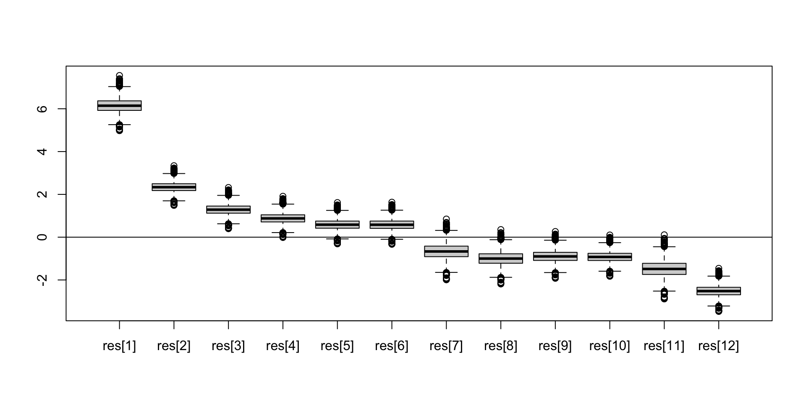
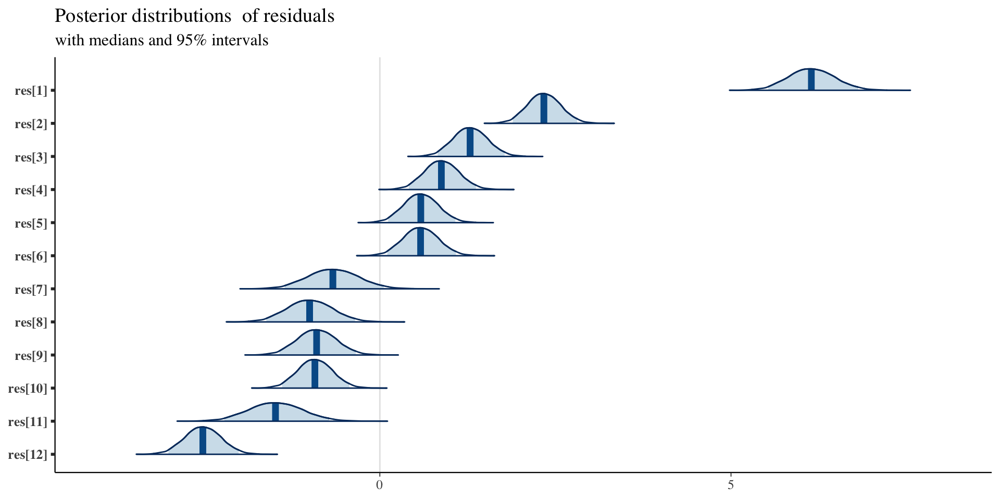
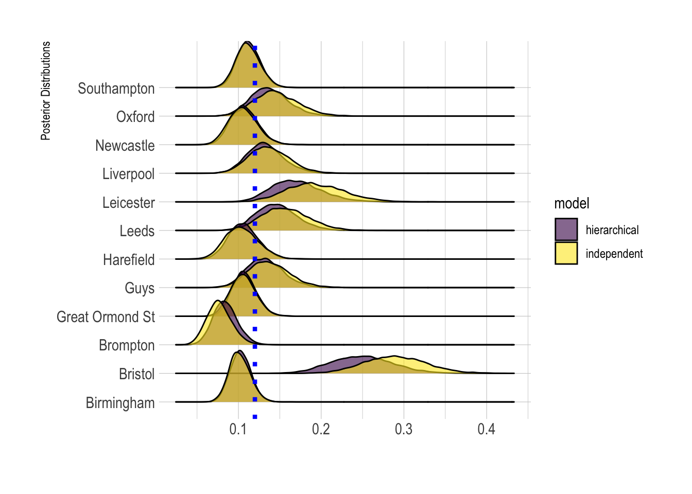

14 Class 14
14.1 Hierarchical Models
library(tidyverse)
library(kableExtra)
bristol = data.frame(hospital = c("Bristol", "Leicester", "Leeds",
"Oxford", "Guys", "Liverpool", "Southampton", "Great Ormond St",
"Newcastle", "Harefield", "Birmingham", "Brompton"), operations = c(143,
187, 323, 122, 164, 405, 239, 482, 195, 177, 581, 301), deaths = c(41,
25, 24, 23, 25, 42, 24, 53, 26, 25, 58, 31)) %>%
mutate(mortality = deaths/operations) %>%
arrange(desc(mortality))
# xtable(bristol,digits=c(0,0,0,0,2))
kbl(bristol) %>%
kable_classic_2(full_width = F)| hospital | operations | deaths | mortality |
|---|---|---|---|
| Bristol | 143 | 41 | 0.2867133 |
| Oxford | 122 | 23 | 0.1885246 |
| Guys | 164 | 25 | 0.1524390 |
| Harefield | 177 | 25 | 0.1412429 |
| Leicester | 187 | 25 | 0.1336898 |
| Newcastle | 195 | 26 | 0.1333333 |
| Great Ormond St | 482 | 53 | 0.1099585 |
| Liverpool | 405 | 42 | 0.1037037 |
| Brompton | 301 | 31 | 0.1029900 |
| Southampton | 239 | 24 | 0.1004184 |
| Birmingham | 581 | 58 | 0.0998279 |
| Leeds | 323 | 24 | 0.0743034 |
Constant-risk model
model= function(){
## Likelihood
for (i in 1:12) {
y[i] ~ dbin(theta, n[i])
res[i] <- (y[i] - n[i]*theta)/sqrt(n[i]*theta*(1-theta))
res2[i] <- res[i]*res[i]
}
## prior
theta ~ dunif(0, 1)
X2.obs <- sum(res2[])
}
data=list(n = bristol$operations, y=bristol$deaths)
library(R2jags)
fit <- jags(data=data, model=model,parameters.to.save=c("theta","res","X2.obs"), n.chain=2, n.iter=5000, n.thin=1, n.burn=100, DIC=FALSE)
module glm loaded
module dic loaded
Compiling model graph
Resolving undeclared variables
Allocating nodes
Graph information:
Observed stochastic nodes: 12
Unobserved stochastic nodes: 1
Total graph size: 102
Initializing model
fit.mcmc <- as.mcmc(fit)
summary(fit.mcmc)
Iterations = 101:5000
Thinning interval = 1
Number of chains = 2
Sample size per chain = 4900
1. Empirical mean and standard deviation for each variable,
plus standard error of the mean:
Mean SD Naive SE Time-series SE
res[1] 6.1547 0.323333 3.266e-03 4.077e-03
res[10] -0.9186 0.242563 2.450e-03 3.058e-03
res[11] -1.4760 0.377327 3.812e-03 4.757e-03
res[12] -2.5142 0.253401 2.560e-03 3.194e-03
res[2] 2.3427 0.232581 2.349e-03 2.932e-03
res[3] 1.2921 0.241510 2.440e-03 3.045e-03
res[4] 0.8833 0.241826 2.443e-03 3.049e-03
res[5] 0.5896 0.242272 2.447e-03 3.054e-03
res[6] 0.5867 0.247097 2.496e-03 3.115e-03
res[7] -0.6590 0.357226 3.609e-03 4.503e-03
res[8] -0.9920 0.319785 3.230e-03 4.031e-03
res[9] -0.8933 0.274931 2.777e-03 3.466e-03
theta 0.1198 0.005473 5.528e-05 6.897e-05
X2.obs 59.0361 2.700825 2.728e-02 3.567e-02
2. Quantiles for each variable:
2.5% 25% 50% 75% 97.5%
res[1] 5.5308 5.9307 6.1509 6.3737 6.80357
res[10] -1.3920 -1.0857 -0.9195 -0.7532 -0.43712
res[11] -2.2126 -1.7360 -1.4775 -1.2188 -0.72716
res[12] -3.0103 -2.6885 -2.5147 -2.3411 -2.01277
res[2] 1.8919 2.1819 2.3407 2.5007 2.80743
res[3] 0.8228 1.1253 1.2904 1.4563 1.77355
res[4] 0.4130 0.7164 0.8817 1.0478 1.36499
res[5] 0.1182 0.4224 0.5881 0.7545 1.07191
res[6] 0.1059 0.4162 0.5852 0.7549 1.07864
res[7] -1.3556 -0.9053 -0.6607 -0.4156 0.05068
res[8] -1.6160 -1.2124 -0.9934 -0.7740 -0.35707
res[9] -1.4298 -1.0828 -0.8945 -0.7059 -0.34752
theta 0.1092 0.1160 0.1197 0.1235 0.13078
X2.obs 56.7580 57.0794 58.0779 60.0498 66.51324
mat=as.matrix(as.mcmc(fit))
theta.avg=mean(mat[,"theta"])
boxplot(mat[,paste0("res[",1:12,"]")])
abline(h=0)
library("bayesplot")
library("ggplot2")
plot_title <- ggtitle("Posterior distributions",
"with medians and 95% intervals")
mcmc_areas(mat,
pars = paste0("res[",1:12,"]"),
prob = 0.95) + plot_title
Independent-parameters model
model= function(){
## Likelihood
for (i in 1:12) {
y[i] ~ dbin(theta[i], n[i])
}
## priors
for (i in 1:12) {
theta[i] ~ dunif(0,1)
}
}
data=list(n = bristol$operations, y=bristol$deaths)
fit <- jags(data=data, model=model,parameters.to.save=c("theta"), n.chain=2, n.iter=5000, n.thin=1, n.burn=100, DIC=FALSE)
module glm loaded
module dic loaded
Compiling model graph
Resolving undeclared variables
Allocating nodes
Graph information:
Observed stochastic nodes: 12
Unobserved stochastic nodes: 12
Total graph size: 38
Initializing model
fit.mcmc <- as.mcmc(fit)
summary(fit.mcmc)
Iterations = 101:5000
Thinning interval = 1
Number of chains = 2
Sample size per chain = 4900
1. Empirical mean and standard deviation for each variable,
plus standard error of the mean:
Mean SD Naive SE Time-series SE
theta[1] 0.29001 0.03690 0.0003728 0.0004798
theta[10] 0.10406 0.01956 0.0001975 0.0002498
theta[11] 0.10115 0.01266 0.0001279 0.0001593
theta[12] 0.07678 0.01482 0.0001497 0.0002032
theta[2] 0.19418 0.03566 0.0003602 0.0004738
theta[3] 0.15629 0.02772 0.0002800 0.0003581
theta[4] 0.14472 0.02603 0.0002630 0.0003419
theta[5] 0.13783 0.02517 0.0002543 0.0003260
theta[6] 0.13738 0.02461 0.0002486 0.0003184
theta[7] 0.11150 0.01439 0.0001454 0.0001944
theta[8] 0.10571 0.01496 0.0001511 0.0001878
theta[9] 0.10570 0.01763 0.0001781 0.0002139
2. Quantiles for each variable:
2.5% 25% 50% 75% 97.5%
theta[1] 0.22195 0.26427 0.28883 0.31386 0.3671
theta[10] 0.06886 0.09036 0.10305 0.11668 0.1456
theta[11] 0.07767 0.09227 0.10078 0.10932 0.1272
theta[12] 0.05059 0.06639 0.07579 0.08618 0.1085
theta[2] 0.12920 0.16945 0.19257 0.21765 0.2681
theta[3] 0.10572 0.13674 0.15488 0.17433 0.2145
theta[4] 0.09763 0.12626 0.14373 0.16208 0.1971
theta[5] 0.09244 0.12019 0.13658 0.15397 0.1906
theta[6] 0.09255 0.12018 0.13606 0.15324 0.1878
theta[7] 0.08542 0.10144 0.11089 0.12082 0.1415
theta[8] 0.07820 0.09545 0.10505 0.11549 0.1366
theta[9] 0.07335 0.09342 0.10487 0.11711 0.1427
mat=as.matrix(as.mcmc(fit))
mat.ind=mat[,paste0("theta[",1:12,"]")]
plot_title <- ggtitle("Posterior distributions",
"with medians and 95% intervals")
mcmc_areas(mat,
pars = paste0("theta[",1:12,"]"),
prob = 0.95) + plot_title
Hierarchical model
model= function(){
## Likelihood
for (i in 1:12) {
y[i] ~ dbin(theta[i], n[i])
logit(theta[i]) <- logit.theta[i]
logit.theta[i] ~ dnorm(mu,inv.sigma.squared)
}
## priors
inv.sigma.squared <- 1/pow(sigma,2)
sigma ~ dunif(0,100)
mu ~ dunif(-100,100)
}
data=list(n = bristol$operations, y=bristol$deaths)
fit <- jags(data=data, model=model,parameters.to.save=c("theta","mu","sigma"), n.chain=2, n.iter=5000, n.thin=1, n.burn=100, DIC=FALSE)
Compiling model graph
Resolving undeclared variables
Allocating nodes
Graph information:
Observed stochastic nodes: 12
Unobserved stochastic nodes: 14
Total graph size: 57
Initializing model
fit.mcmc <- as.mcmc(fit)
summary(fit.mcmc)
Iterations = 101:5000
Thinning interval = 1
Number of chains = 2
Sample size per chain = 4900
1. Empirical mean and standard deviation for each variable,
plus standard error of the mean:
Mean SD Naive SE Time-series SE
mu -1.93337 0.14010 0.0014152 0.0018385
sigma 0.42397 0.12790 0.0012919 0.0024426
theta[1] 0.24829 0.03619 0.0003656 0.0006218
theta[10] 0.10612 0.01765 0.0001783 0.0002248
theta[11] 0.10278 0.01212 0.0001225 0.0001601
theta[12] 0.08401 0.01423 0.0001438 0.0002009
theta[2] 0.16990 0.03025 0.0003056 0.0004309
theta[3] 0.14629 0.02424 0.0002449 0.0003217
theta[4] 0.13822 0.02268 0.0002291 0.0003011
theta[5] 0.13233 0.02167 0.0002189 0.0002883
theta[6] 0.13232 0.02138 0.0002160 0.0002850
theta[7] 0.11166 0.01332 0.0001345 0.0001716
theta[8] 0.10700 0.01426 0.0001440 0.0001857
theta[9] 0.10717 0.01648 0.0001664 0.0002217
2. Quantiles for each variable:
2.5% 25% 50% 75% 97.5%
mu -2.21506 -2.02114 -1.93439 -1.84541 -1.6529
sigma 0.23406 0.33506 0.40341 0.48992 0.7315
theta[1] 0.18088 0.22340 0.24733 0.27224 0.3219
theta[10] 0.07388 0.09396 0.10521 0.11743 0.1430
theta[11] 0.08064 0.09422 0.10234 0.11073 0.1278
theta[12] 0.05813 0.07403 0.08339 0.09324 0.1136
theta[2] 0.11658 0.14842 0.16786 0.18878 0.2354
theta[3] 0.10232 0.12953 0.14500 0.16179 0.1978
theta[4] 0.09739 0.12220 0.13705 0.15305 0.1850
theta[5] 0.09269 0.11725 0.13113 0.14606 0.1790
theta[6] 0.09398 0.11725 0.13105 0.14595 0.1777
theta[7] 0.08644 0.10259 0.11144 0.12032 0.1389
theta[8] 0.08095 0.09734 0.10635 0.11623 0.1374
theta[9] 0.07733 0.09569 0.10654 0.11769 0.1411
mat=as.matrix(as.mcmc(fit))
mat.hier=mat[,paste0("theta[",1:12,"]")]
plot_title <- ggtitle("Posterior distributions",
"with medians and 95% intervals")
mcmc_areas(mat,
pars = paste0("theta[",1:12,"]"),
prob = 0.95) + plot_title
Hierarchical model
library(reshape2)
Attaching package: 'reshape2'
The following object is masked from 'package:tidyr':
smiths
df1=melt(mat.ind) %>% mutate(model="independent")
df2=melt(mat.hier) %>% mutate(model="hierarchical")
df=bind_rows(df1,df2)
df$hospital=c("Bristol", "Leicester", "Leeds", "Oxford", "Guys", "Liverpool", "Southampton", "Great Ormond St", "Newcastle", "Harefield", "Birmingham", "Brompton")[as.numeric(as.factor(df$Var2))]
library(tidyverse)
library(hrbrthemes)
NOTE: Either Arial Narrow or Roboto Condensed fonts are required to use these themes.
Please use hrbrthemes::import_roboto_condensed() to install Roboto Condensed and
if Arial Narrow is not on your system, please see https://bit.ly/arialnarrow
library(viridis)
Loading required package: viridisLite
library(ggridges)
df %>%
ggplot( aes(y=hospital, x=value, fill=model)) +
geom_density_ridges(alpha=0.6) +
scale_fill_viridis(discrete=TRUE) +
scale_color_viridis(discrete=TRUE) +
theme_ipsum() +
theme(
panel.spacing = unit(0.1, "lines"),
strip.text.x = element_text(size = 8)
) +
xlab("") +
ylab("Posterior Distributions") +
geom_vline(xintercept = theta.avg, linetype="dotted",
color = "blue", size=1.5)
Warning: Using `size` aesthetic for lines was deprecated in ggplot2
3.4.0.
Please use `linewidth` instead.
Picking joint bandwidth of 0.00306